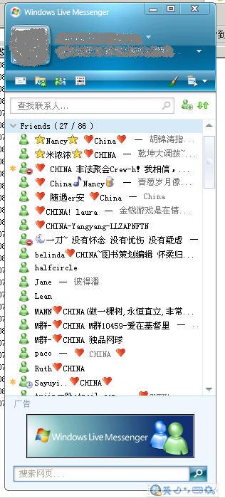

下午好友在MSN上的一番爱国演讲，对于（L）China和她，我更在乎的是朋友，“为了她”我修改了自己的签名。 越来越习惯将感情放在心里，爱国...也在我心里。
某人发给我的截图。

26日去长野，多多为我们祷告！
FBI是猪，美国是猪。美国的走狗该挨千刀！美国的党羽们应该下地域。全是为了钱。 如果这个世界没有美国一切都将那么的美好
转： 巴黎市政府竟把藏独标语挂上市政大厦！ 欧洲议会通过决议支持藏独为北京抹黑 美国众议院通过决议要抵制中国奥运！ 德国总理公开支持藏独，不参加奥运! 面对21世纪的中国八国联军想干什么? 让全世界看看中国人团结的力量！ 5月1日,让全国的家乐福冷场! 6月1日,让全国的肯德基冷场! 现在起不要喝可口可乐这猫尿样的东西! 每人转发10个，你就是优秀的中国人！ 每人转发20个，你就是最爱国的中国人
德国民意调查机构Ipsos受《金融时报》德国版委托所做的一份民调表明，62%的被调查者都认为不应该让德国运动员和代表队不去参加奥运会，只有27%的人认为应该抵制奥运会。
被调查者抵制奥运的理由是西方媒体报道的西藏事件，不久前德国外交政策网站披露的有关西藏问题的报道流传之后，或能在一定程度上减轻部分德国民众的抵触情绪。
据世界经济学人报道http://economist.icxo.com讯，反对抵制奥运会的人当中，43%的人给出的理由是：抵制奥运会给德国和德国经济带来负面影响。四分之一的被调查者表示，鉴于不久前西藏发生的事件，他们不想如往常一样通过电视看奥运会了。
自西藏3月发生暴乱后，一些西方国家和西方媒体以人权为借口，对北京奥运进行杯葛。据德国外交政策网站早前的消息披露，利用西藏事件杯葛奥运是美国、德国和西藏流亡组织精神领袖达赖喇嘛共同导演的闹剧。
据称，美国国务院、德国弗里德里希-瑙曼基金会（瑙曼基金会）以及西藏流亡组织去年5月共同制定了一套利用西藏问题掀起反华浪潮的行动计划，计划在奥运火炬传递期间采取能产生公众效应的行动，并使抗议活动在8月北京奥运会期间达到高潮。
据会议纪录及一名加拿大记者调查，德国外交部一个前沿组织，在反华西藏运动的准备工作中扮演着重要的角色。该运动在巴黎用暴力迫使奥运火炬传递中断。
瑙曼基金会在很大程度上由德国政府提供资金，于2005年3月开始筹备会议，并与在印度达兰萨拉的达赖喇嘛协调行动。最后有来自56个国家的300多人参加了这次会议，36个西藏团体和145个西藏支援组织也派代表出席。该次会议经过多天商谈后，达成一份行动计划，包括西藏流亡组织总理桑东仁波切、美国副国务卿﹑西藏问题特别协调员多布里扬斯基等都参加了会议。
美国PRWEB新闻4月10日文章，原题：美中国问题专家称：抵制北京奥运可能触发对美国经济的侵害 中国问题专家，休斯顿中国股市文摘（China Stock Digest）编辑吉姆•特里庞（Jim Trippon）表示，在美国经济陷入衰退之时抵制北京奥运可能是一大灾难性举动。
特里庞9日说：“中国已经明确地释放出这样一种信号：如果美国对与北京奥运相关的问题处置不当的话，由此产生的影响将长期无法消除。在现在这种时刻，如果美国将奥运变为政治出气筒的话，美国将无法承受其重。”
特里庞警告道，中国是美国最重要的贸易伙伴，也是美国最大的债权国。中国现在掌握着足以将美国丢进（经济）低迷深渊、使美钞价格暴跌的力量。这正是严酷的现实。
特里庞表示，自己对于最近来自中国外交部的各种评论极为关注。中国外交部发言人姜瑜表示，美国政客应当对最近发生的事件保持“明确和清醒的理解“，并希望他们站在战略及长远高度处理中美关系。
就这些外交辞令而言，这是一种来自北京方面极为严重的警告：如果美国抵制北京奥运，中国将会还以颜色。无论人们的政治倾向如何，这都是一场美国不能且不应挑起的战争。
特里庞说：“就中国对此事的感受估计不足将可能犯下严重错误。”
最近，在要不要抵制家乐福的问题上，出现了很多声音。连一贯受我尊敬的央视主持人白岩松也站出来说话了，他说“去不去家乐福是个人的事，即使许多人因为抵制而没去家乐福，相信那一天，家乐福也会人不少。因为对于个人来说，日子也不应受政治的干扰；更何况，拿别人的错误来惩罚自己，这等于太给别人面子。” 没错，去不去家乐福是个人的事情，而且也不应该给去家乐福的人贴上不爱国的标签，给不去家乐福的人贴上爱国的标签。并且也不可能所有的人都不去家乐福，但是我们是否需要积聚一个声音来向世界表达我们的情感、表现我们的态度，来回应西方国家对我们的不公正？也许，抵制家乐福并不是一个最好的选择，但是起码我们通过这种平和的手段向世界呐喊。诚然，家乐福还是要去的，也没必要在以后的日子里不再去，因为毕竟它和人们的生活息息相关，很多同胞也在那里工作，“没必要用别人的错误惩罚自己”；但是，一天或一段时间的抵制，仅仅是为了发表我们的声音，抒发我们的愤怒。就像为了环保、为了节约能源，最近要在香港、北京等大城市晚上停止夜景照明一个小时一样，你说这样做究竟能节约多少能源，但是这是一种姿态，一种立场和态度。一天或几天不去家乐福，也是为了表达这个意愿。 我们的爱国也许没有某些貌似理性、冷静的人那么成熟、高尚，我们或许头脑简单没有考虑过爱国的复杂性，但是，我们起码和平的、合法的表达了自己的不满，我们没有主持人手握话筒的便利条件，没可能为自己喜欢的球队凌驾于人的通过TV摇旗呐喊，我们只能象一只只渺小的萤火虫聚集起微弱的光芒，努力的不让黑暗忽视、淹没。 白岩松说“当看到身边有些人很委屈很“生死”的时候，我总是劝他们说：你一生气，人家就真的实现目的。”按照这种逻辑，当日本人侵华的时候，我们是否也应该该干嘛干嘛，不要“生气”，因为“捣乱者会被人们以小丑的方式来留在记忆深处。用我们的平静与大气，给他们一个这样进入历史的机会吧！”可是，你不反抗，别人知道你是享受呢，还是痛苦呢？“小丑”也是需要揭露的，否则，别人都说是名模，你还自欺欺人的说历史会见证的，历史也是人写的。 我们就是无法做到白记者这么“坦然”、“大度”，我们就是容不下国家尊严被侵犯，我们就是这么狭隘、眼里揉不进沙子，但起码我们还有话语权，也不愿意这点权力被貌似更高明的人剥夺。 最后一句，去不去家乐福用不着上纲上线，但是爱国不分高低，不用高人一等的发出嗤之以鼻的声音。
是China，CHINA是台湾申请入联的，我也是有人告知后改的：）
建议飞飞不用再来读咯，大家都舒服~
如果意气用事就能解决事情也就好了。 其实西藏不过是西方用来要挟中国的一枚棋子，对于中国的逐渐崛起，困难自然也会不断。 我倒更希望国人可以学好外语，而中国可以更开放一些，让西人多了解中国。西方民众其实对中国一无所知，基本出于蒙昧无知的状态。相互了解才是解决问题的关键。穷兵黩武只会孤立无援。 爱中国放在心里也就够了
我同意飞飞的观点，而且觉得他（她）话说得也很中肯。我关注中国茶也有几年了，还记得读的第一篇文章是英文版的“水调歌头”，从此就迷上了这个BLOG，还推荐给了许多我的朋友。感觉几年前的文章确实较现在的更有可读性，更耐人寻味，而且也让我认识到美女不全都是思维简单的。说这些并不是在抱怨和批评，因为毕竟我们不是圣人，不可能每篇文章都句句珠玑。相反，这说明大家（至少是我吧）对中国茶有一种期待，期待CHRISTINA在今后随着年龄跟阅历的增长，能够给我们带来更多的心灵鸡汤。
对的~ …不可能每篇文章都句句珠玑…
人生各个阶段的经历会不同，几年前和现在也不一样，我现在就是这个样子，很平静很淡漠，当然生活仍然令我感到矛盾，现在我花在BLOG上的时间也少了许多。没有翻天蹈海的经历如何写出深刻的思考？有谁希望自己的生活那么戏剧化？另外，我毕竟不是以写BLOG为生，这里只是一个记录生活的载体。其实，和你们恰恰相反，我看过去自己写的文字觉得很矫情、幼稚，现在多了些朴实无华。我更喜欢现在。
对于你们怀着善意和友好的意见我会诚恳地听取，各位也知道这里经常会有苍蝇，他们的出发点就是要你难过难受，这样的人时常有，以至我回复起来也是没好气儿，误解了你们的意思，请飞飞和Cindy谅解~
苍蝇飞过……
苍蝇拍飞过~~
唐僧飞过
自己年轻时很幼稚也易偏执，年龄大了反而变的很平和很朴实了，讨厌那些胡扯八拉的人！
你好！我是中国云南省的~我常常看你文章哦！
存档只读，评论已关闭。
Name (required)
Email (will not be published) (required)
Website
« 晨心 | 练瑜枷 »
16 Responses to “红心闪闪...MSN”
2008-04-16
26日去长野，多多为我们祷告！
2008-04-17
FBI是猪，美国是猪。美国的走狗该挨千刀！美国的党羽们应该下地域。全是为了钱。
如果这个世界没有美国一切都将那么的美好
2008-04-17
转：
巴黎市政府竟把藏独标语挂上市政大厦！
欧洲议会通过决议支持藏独为北京抹黑
美国众议院通过决议要抵制中国奥运！
德国总理公开支持藏独，不参加奥运!
面对21世纪的中国八国联军想干什么?
让全世界看看中国人团结的力量！
5月1日,让全国的家乐福冷场!
6月1日,让全国的肯德基冷场!
现在起不要喝可口可乐这猫尿样的东西!
每人转发10个，你就是优秀的中国人！
每人转发20个，你就是最爱国的中国人
2008-04-17
德国民意调查机构Ipsos受《金融时报》德国版委托所做的一份民调表明，62%的被调查者都认为不应该让德国运动员和代表队不去参加奥运会，只有27%的人认为应该抵制奥运会。
被调查者抵制奥运的理由是西方媒体报道的西藏事件，不久前德国外交政策网站披露的有关西藏问题的报道流传之后，或能在一定程度上减轻部分德国民众的抵触情绪。
据世界经济学人报道http://economist.icxo.com讯，反对抵制奥运会的人当中，43%的人给出的理由是：抵制奥运会给德国和德国经济带来负面影响。四分之一的被调查者表示，鉴于不久前西藏发生的事件，他们不想如往常一样通过电视看奥运会了。
自西藏3月发生暴乱后，一些西方国家和西方媒体以人权为借口，对北京奥运进行杯葛。据德国外交政策网站早前的消息披露，利用西藏事件杯葛奥运是美国、德国和西藏流亡组织精神领袖达赖喇嘛共同导演的闹剧。
据称，美国国务院、德国弗里德里希-瑙曼基金会（瑙曼基金会）以及西藏流亡组织去年5月共同制定了一套利用西藏问题掀起反华浪潮的行动计划，计划在奥运火炬传递期间采取能产生公众效应的行动，并使抗议活动在8月北京奥运会期间达到高潮。
据会议纪录及一名加拿大记者调查，德国外交部一个前沿组织，在反华西藏运动的准备工作中扮演着重要的角色。该运动在巴黎用暴力迫使奥运火炬传递中断。
瑙曼基金会在很大程度上由德国政府提供资金，于2005年3月开始筹备会议，并与在印度达兰萨拉的达赖喇嘛协调行动。最后有来自56个国家的300多人参加了这次会议，36个西藏团体和145个西藏支援组织也派代表出席。该次会议经过多天商谈后，达成一份行动计划，包括西藏流亡组织总理桑东仁波切、美国副国务卿﹑西藏问题特别协调员多布里扬斯基等都参加了会议。
2008-04-17
美国PRWEB新闻4月10日文章，原题：美中国问题专家称：抵制北京奥运可能触发对美国经济的侵害 中国问题专家，休斯顿中国股市文摘（China Stock Digest）编辑吉姆•特里庞（Jim Trippon）表示，在美国经济陷入衰退之时抵制北京奥运可能是一大灾难性举动。
特里庞9日说：“中国已经明确地释放出这样一种信号：如果美国对与北京奥运相关的问题处置不当的话，由此产生的影响将长期无法消除。在现在这种时刻，如果美国将奥运变为政治出气筒的话，美国将无法承受其重。”
特里庞警告道，中国是美国最重要的贸易伙伴，也是美国最大的债权国。中国现在掌握着足以将美国丢进（经济）低迷深渊、使美钞价格暴跌的力量。这正是严酷的现实。
特里庞表示，自己对于最近来自中国外交部的各种评论极为关注。中国外交部发言人姜瑜表示，美国政客应当对最近发生的事件保持“明确和清醒的理解“，并希望他们站在战略及长远高度处理中美关系。
就这些外交辞令而言，这是一种来自北京方面极为严重的警告：如果美国抵制北京奥运，中国将会还以颜色。无论人们的政治倾向如何，这都是一场美国不能且不应挑起的战争。
特里庞说：“就中国对此事的感受估计不足将可能犯下严重错误。”
2008-04-18
最近，在要不要抵制家乐福的问题上，出现了很多声音。连一贯受我尊敬的央视主持人白岩松也站出来说话了，他说“去不去家乐福是个人的事，即使许多人因为抵制而没去家乐福，相信那一天，家乐福也会人不少。因为对于个人来说，日子也不应受政治的干扰；更何况，拿别人的错误来惩罚自己，这等于太给别人面子。”
没错，去不去家乐福是个人的事情，而且也不应该给去家乐福的人贴上不爱国的标签，给不去家乐福的人贴上爱国的标签。并且也不可能所有的人都不去家乐福，但是我们是否需要积聚一个声音来向世界表达我们的情感、表现我们的态度，来回应西方国家对我们的不公正？也许，抵制家乐福并不是一个最好的选择，但是起码我们通过这种平和的手段向世界呐喊。诚然，家乐福还是要去的，也没必要在以后的日子里不再去，因为毕竟它和人们的生活息息相关，很多同胞也在那里工作，“没必要用别人的错误惩罚自己”；但是，一天或一段时间的抵制，仅仅是为了发表我们的声音，抒发我们的愤怒。就像为了环保、为了节约能源，最近要在香港、北京等大城市晚上停止夜景照明一个小时一样，你说这样做究竟能节约多少能源，但是这是一种姿态，一种立场和态度。一天或几天不去家乐福，也是为了表达这个意愿。
我们的爱国也许没有某些貌似理性、冷静的人那么成熟、高尚，我们或许头脑简单没有考虑过爱国的复杂性，但是，我们起码和平的、合法的表达了自己的不满，我们没有主持人手握话筒的便利条件，没可能为自己喜欢的球队凌驾于人的通过TV摇旗呐喊，我们只能象一只只渺小的萤火虫聚集起微弱的光芒，努力的不让黑暗忽视、淹没。
白岩松说“当看到身边有些人很委屈很“生死”的时候，我总是劝他们说：你一生气，人家就真的实现目的。”按照这种逻辑，当日本人侵华的时候，我们是否也应该该干嘛干嘛，不要“生气”，因为“捣乱者会被人们以小丑的方式来留在记忆深处。用我们的平静与大气，给他们一个这样进入历史的机会吧！”可是，你不反抗，别人知道你是享受呢，还是痛苦呢？“小丑”也是需要揭露的，否则，别人都说是名模，你还自欺欺人的说历史会见证的，历史也是人写的。
我们就是无法做到白记者这么“坦然”、“大度”，我们就是容不下国家尊严被侵犯，我们就是这么狭隘、眼里揉不进沙子，但起码我们还有话语权，也不愿意这点权力被貌似更高明的人剥夺。
最后一句，去不去家乐福用不着上纲上线，但是爱国不分高低，不用高人一等的发出嗤之以鼻的声音。
2008-04-18
是China，CHINA是台湾申请入联的，我也是有人告知后改的：）
2008-04-18
建议飞飞不用再来读咯，大家都舒服~
2008-04-20
如果意气用事就能解决事情也就好了。
其实西藏不过是西方用来要挟中国的一枚棋子，对于中国的逐渐崛起，困难自然也会不断。
我倒更希望国人可以学好外语，而中国可以更开放一些，让西人多了解中国。西方民众其实对中国一无所知，基本出于蒙昧无知的状态。相互了解才是解决问题的关键。穷兵黩武只会孤立无援。
爱中国放在心里也就够了
2008-04-20
我同意飞飞的观点，而且觉得他（她）话说得也很中肯。我关注中国茶也有几年了，还记得读的第一篇文章是英文版的“水调歌头”，从此就迷上了这个BLOG，还推荐给了许多我的朋友。感觉几年前的文章确实较现在的更有可读性，更耐人寻味，而且也让我认识到美女不全都是思维简单的。说这些并不是在抱怨和批评，因为毕竟我们不是圣人，不可能每篇文章都句句珠玑。相反，这说明大家（至少是我吧）对中国茶有一种期待，期待CHRISTINA在今后随着年龄跟阅历的增长，能够给我们带来更多的心灵鸡汤。
2008-04-21
对的~ …不可能每篇文章都句句珠玑…
人生各个阶段的经历会不同，几年前和现在也不一样，我现在就是这个样子，很平静很淡漠，当然生活仍然令我感到矛盾，现在我花在BLOG上的时间也少了许多。没有翻天蹈海的经历如何写出深刻的思考？有谁希望自己的生活那么戏剧化？另外，我毕竟不是以写BLOG为生，这里只是一个记录生活的载体。其实，和你们恰恰相反，我看过去自己写的文字觉得很矫情、幼稚，现在多了些朴实无华。我更喜欢现在。
对于你们怀着善意和友好的意见我会诚恳地听取，各位也知道这里经常会有苍蝇，他们的出发点就是要你难过难受，这样的人时常有，以至我回复起来也是没好气儿，误解了你们的意思，请飞飞和Cindy谅解~
2008-04-21
苍蝇飞过……
2008-04-22
苍蝇拍飞过~~
2008-04-23
唐僧飞过
2008-04-23
自己年轻时很幼稚也易偏执，年龄大了反而变的很平和很朴实了，讨厌那些胡扯八拉的人！
2008-04-28
你好！我是中国云南省的~我常常看你文章哦！
Leave A Reply
存档只读，评论已关闭。